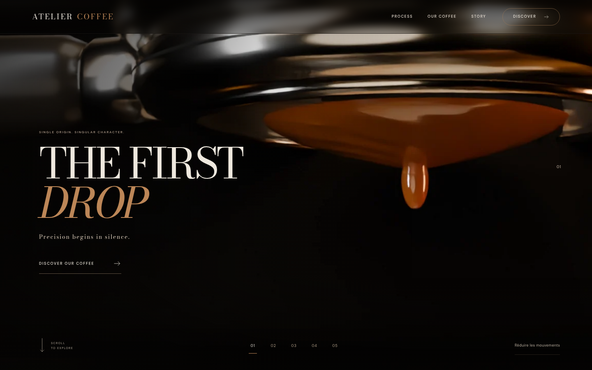
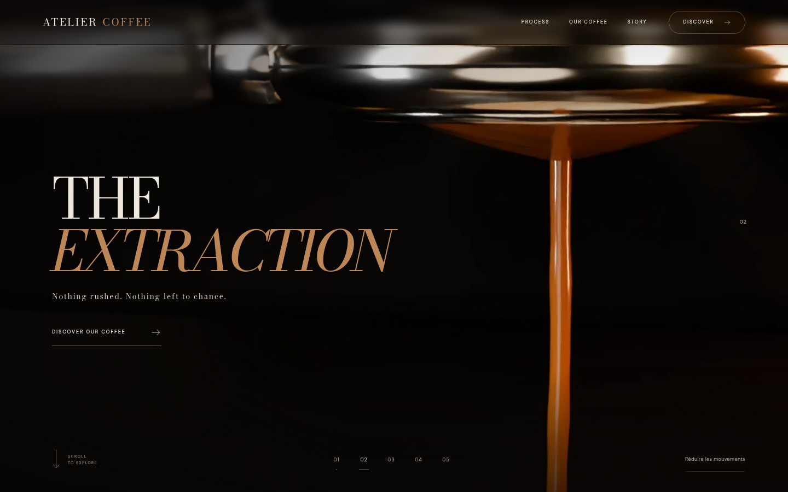
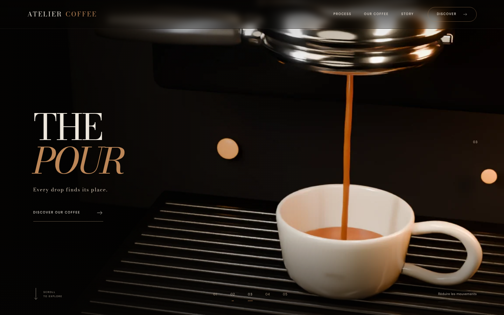
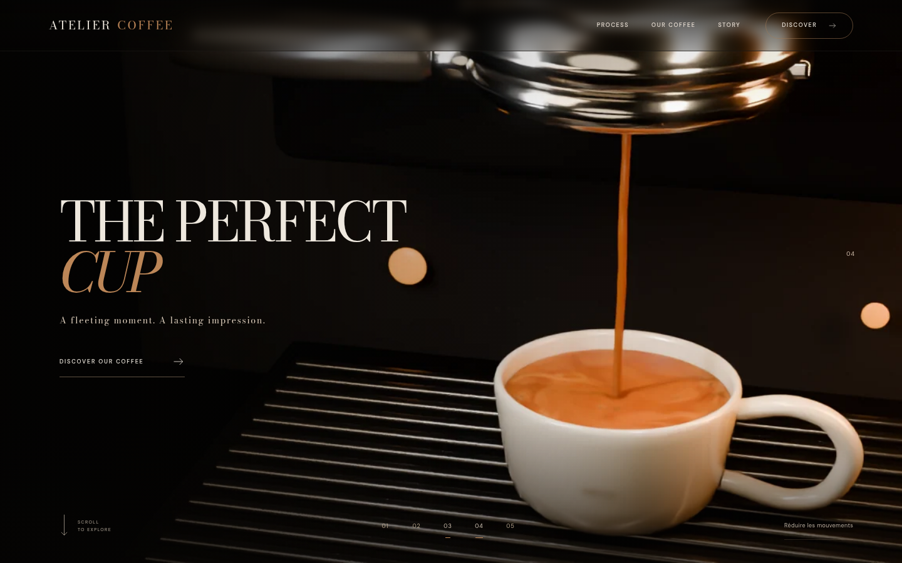
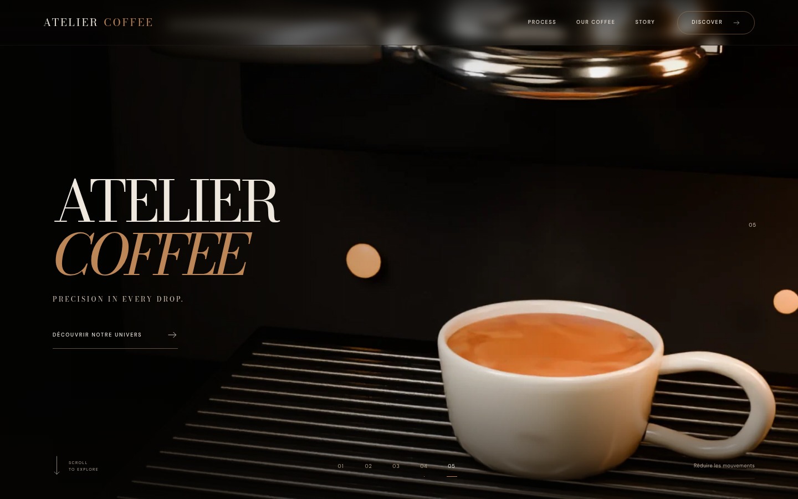

RECETTE CHROMIUM · 22 OCTOBRE 2026
Le scroll. Le versement.
Les preuves réelles.
160 photogrammes originaux. Le versement, la montée de niveau et le retour arrière sont visibles. Le niveau photoréaliste premium reste à améliorer : crema trop lisse, flux trop régulier.
Molette aller et retour
Enregistrement du vrai navigateur, avec pause au milieu. Aucun autoplay dans le site.
Cinq positions du vrai lecteur

0 % — Première goutte, cadrage macro · index 0 · mobile

25 % — Flux établi · index 40 · mobile

50 % — Tasse révélée, niveau bas · index 80 · mobile

75 % — Niveau proche du plein · index 119 · mobile

100 % — Tasse pleine, flux arrêté · index 159 · mobileRendu 3D précalculé. La crema reste perfectible ; détails et limites dans le rapport. Ces captures sont des preuves de recette, distinctes des cinq références artistiques.